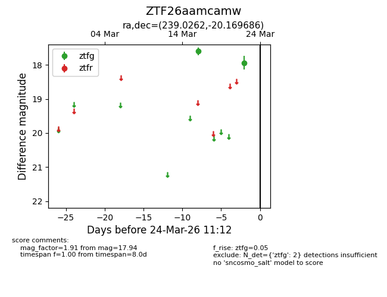
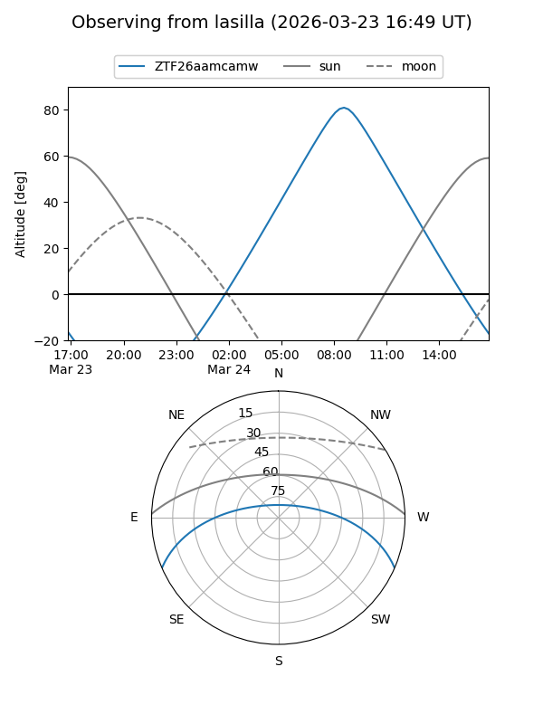
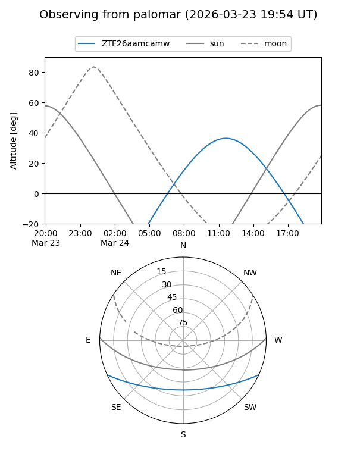

ZTF26aamcamw
Target ZTF26aamcamw at 2026-03-24 11:14
Aliases and brokers:
FINK: link
Lasair: link
ALeRCE: link
alt names
ZTF26aamcamw (ztf,fink_ztf)
Coordinates:
equatorial (ra, dec) = 239.0262,-20.16969
equatorial (HMS+DMS) = 15:56:06.29,-20:10:10.87
galactic (l, b) = (351.2316,+24.91980)
Flags:
Photometry:
last ztfg=17.94
2 ztfg detections
Lightcurve

Visibility


Additional plots